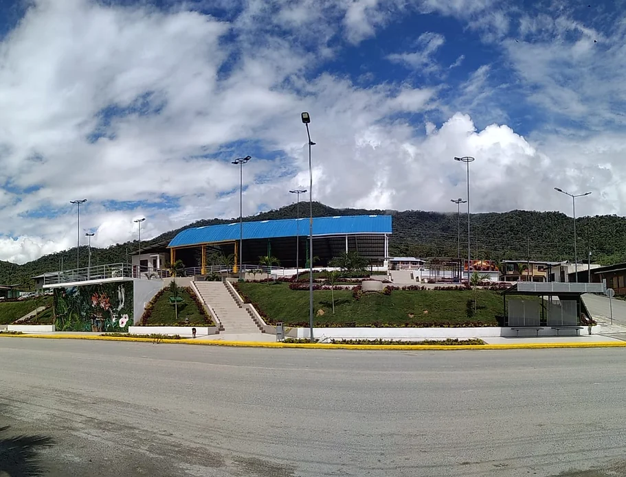

Blogs El Pangui
En este blog podemos encontrar información, datos relevantes y exuberantes acerca de paisajes de esta selva tropical, del majestuoso río Zamora y la riqueza faunística de la reserva natural Los Hachales. Además, conoceremos de sus comunidades indígenas y campesinas que mantienen vivas tradiciones ancestrales que enriquecen la experiencia de los visitantes.
Aquí podras encontrar diferentes actividades que se practica como: senderismo, observación de flora y fauna, y turismo comunitario, además de cononcer de la gastronomía típica de la región.
TUS PRÓXIMOS DESTINOS
El Guismi
La parroquia se encuentra inmersa en un entorno natural exuberante, con una gran variedad de flora y fauna. Los bosques, ríos y montañas ofrecen un paisaje espectacular y son el hogar de numerosas especies endémicas.El nombre de esta zona fue dado por los nativos, por las condiciones naturales de la misma y a la abundancia de plantas llamadas GUAYMI en lengua shuar, cuyo significado es guayusa en grandes cantidades. El Guismi, al igual que otras zonas de El Pangui, posee un gran potencial turístico. Sus paisajes, su cultura y su biodiversidad la convierten en un destino atractivo para quienes buscan experiencias auténticas en contacto con la naturaleza.
Tundayme
Ees una parroquia del cantón El Pangui, en la provincia de Zamora Chinchipe, Ecuador. Su nombre, de origen shuar, significa "lugar de la piedra grande". Esta parroquia ha adquirido una relevancia nacional e internacional debido a la presencia de uno de los yacimientos de cobre más grandes de Sudamérica. pesar de la actividad minera, Tundayme aún conserva una gran belleza natural. Sus montañas, ríos y bosques son el hogar de una gran variedad de flora y fauna. Turismo: El turismo comunitario es una alternativa económica para los habitantes de Tundayme. Los visitantes pueden conocer las tradiciones de los pueblos indígenas, realizar caminatas por la naturaleza y disfrutar de la gastronomía local.
Pachicutza
Esta parroquia se destaca por su rica diversidad cultural, donde conviven mestizos y shuar, cada uno con sus propias tradiciones y formas de vida. La coexistencia de mestizos y shuar en Pachicutza ha creado un rico tapiz cultural. Las festividades, la gastronomía y las costumbres de ambos grupos se entrelazan, creando un ambiente único y lleno de color. Eentre las actividades que más se realiza es la Observación de avees. La diversidad de aves en la zona es impresionante. Conocer las diferentes especies y sus cantos es una actividad muy popular entre los amantes de la naturaleza.